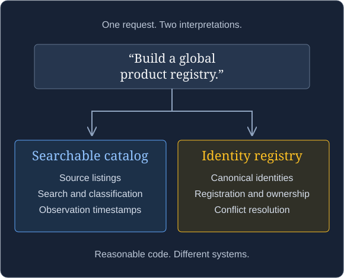

We wanted a searchable collection of products.
Specifically, products in our inventory, potentially expanded to include products appearing in inventory across other cannabis retailers. Something people could browse, search, classify, and use to understand what was available.
People kept calling it a global product registry.
That sounds reasonable. A collection of products, somewhere central. Registry. Catalog. Close enough.
Except those words can send an implementation in very different directions.
Tell an AI agent to build a global product registry, and it might reasonably start defining canonical product identities, registration workflows, ownership, lifecycle states, and uniqueness constraints. It might decide how conflicting registrations get resolved and which record is authoritative.
Meanwhile, the person who requested it was thinking: Can I search the products these stores carry?
Both interpretations are understandable. They describe different systems.
Before AI, a terminology disagreement often produced a meeting. Now it can produce a database schema.
A catalog can have IDs. A registry can be searchable.
There is no universal law that makes every catalog nonauthoritative or every registry a governed source of truth.
These words have different histories across domains. Catalogs can contain canonical identifiers. Registries can support browsing and discovery. A product can legitimately need both sets of capabilities.
The problem is the expectations a name brings into the conversation.
Catalog generally suggests a collection organized for discovery, classification, or lookup. Registry can suggest registration, identity, authority, ownership, and lifecycle management.
Those implications are questions to resolve. They are not requirements that a word magically settles.

For our product collection, the useful questions are concrete:
- Are we showing retailer listings, or asserting that listings from different retailers represent the same product?
- Do we preserve each source’s identifiers, or issue a canonical identity?
- Who decides whether two similar products are actually the same?
- Does inclusion mean “observed in someone’s inventory” or “officially registered”?
- What does “available” mean, and how recently was it observed?
The answers determine the data model.
An aggregate catalog might preserve source records and timestamps, with product matching treated as a separate capability. An authoritative registry might require enrollment rules and a process for resolving identity conflicts.
Changing the table name later will not reconcile those decisions.
The disagreement existed before the code
Software development has always involved translating between people who understand different parts of a problem.
A product owner describes an outcome. An engineer asks what happens when something fails. Someone notices that “customer” means an individual in one system and an organization in another. A database discussion reveals that two departments disagree about who owns a record.
Somewhere in that process, the requirement becomes more precise.
It did not always happen gracefully. Sometimes it happened in the third meeting that should have been an email. Sometimes implementation simply took long enough for someone to ask the obvious question.
AI compresses the distance between idea, interpretation, and implementation. An assumption can become code before the people involved discover that it was an assumption.
Consider two people independently asking agents to implement parts of the same product system. One treats a product as a retailer’s listing. The other treats it as a canonical entity shared across retailers.
Each agent can produce consistent code. Each test suite can pass. Integration exposes the disagreement because the systems disagree about what a product is.
The causal chain is straightforward: ambiguous meaning produces different implementations; those implementations embody different architectures; integration inherits the cost.
A naming disagreement can become an architectural fork before anyone realizes the disagreement existed.
The same problem appears inside a test environment
The terminology issue also surfaced in our work integrating against an inconsistent API.
“Mock the API” sounds like a reasonable starting point. It leaves unresolved whether the replacement should return prepared JSON, remember state, reproduce pagination, or let us control when an update becomes visible.
Established testing vocabulary helps make the request more precise:
| Term | Primary responsibility |
|---|---|
| Test double | Replaces a production dependency for testing |
| Stub | Supplies configured answers |
| Mock | Verifies expected interactions |
| Spy | Records interactions for inspection |
| Fake | Provides a working implementation with simplifying shortcuts |
These distinctions come from the widely used Meszaros/Fowler taxonomy. Tools and teams sometimes use the names more loosely, so describing the required behavior remains essential. Martin Fowler: Test Double.
If the test only needs a payload for deserialization, a stub may be sufficient. If it needs inventory state to evolve across requests, the replacement needs stateful behavior. If it needs to reproduce a timing-sensitive failure, it needs control over relevant timing as well.
The architecture follows the required behavior. “Mock” alone does not specify it.
The next episode develops that example through the vocabulary of catalogs, worlds, snapshots, and operators. The general lesson starts here: a familiar noun can conceal several implementation decisions.
Put shared meaning where the agent can use it
For a consequential term, write down four things:
| Question | What the answer establishes |
|---|---|
| What does it mean here? | The concept people intend |
| What does it own or guarantee? | The responsibility |
| What must the name not imply? | The boundary |
| How will we verify it? | The acceptance evidence |
For the product example, an initial definition might read:
Product catalog: a searchable aggregation of product listings observed in retailer inventory. Preserve source identifiers and observation timestamps. Inclusion does not establish an authoritative cross-retailer product identity. Canonical identity and registration workflows require a separate decision.
That paragraph gives an agent useful constraints. It also gives a human reviewer a chance to catch disagreement before it becomes a schema.
It does not solve product matching, availability, or every future requirement. It makes the current boundary explicit so those questions can be addressed deliberately.
Place the definition near the work: in the feature brief, domain documentation, or repository guidance that the agent reads. Keep one authoritative definition and link to it from related tasks. Otherwise, three slightly different copies can recreate the same disagreement.
When the meaning changes, update the definition and inspect the contracts and tests that depend on it. Renaming a class is only part of the change.
Examples make definitions testable
Abstract agreement can disappear as soon as someone provides an example.
Suppose two retailers use the same local product identifier. Are those records duplicates? If identifiers are scoped to a retailer, they are not duplicates merely because the strings match.
Suppose two listings have the same name and package size but different source identifiers. Should the system merge them? A searchable collection does not, on its own, answer that identity question.
Suppose a product appeared in inventory yesterday. Does the catalog still describe it as available today? The definition needs an observation or freshness rule before a display can make that claim responsibly.
Those examples are acceptance criteria waiting to be written.
An AI agent can generate both the implementation and tests based on the same mistaken assumption. A passing suite then establishes internal agreement. It does not establish that the interpretation matches the business need.
Use examples agreed upon outside that generated implementation. Ask the agent to explain what it believes each example means before the change expands across the repository.
A small practice before the next implementation
Before assigning a substantial feature, identify the few terms that could change the architecture if interpreted differently.
Ask the implementer—human or AI—to restate those meanings and give a boundary example. Review that interpretation while it is still a paragraph.
Then connect the accepted definition to the design and tests. The terminology becomes useful because it shapes observable behavior.
This does not require a terminology committee. It requires enough agreement to distinguish the system we want from another system that would also fit the words.
Engineering at AI speed
AI has expanded who can turn an idea into working software. A product owner, analyst, designer, or engineer can now explore an implementation directly.
That is an enormous capability. The translation work that engineers traditionally performed needs to become more explicit and accessible as a result.
Questions about identity, ownership, failure, consistency, and evidence still need answers. The ability to generate code does not answer them automatically.
Agree on the consequential terms. Make assumptions visible. Define the boundaries. Give the agent acceptance criteria that reflect the business intent. Review the interpretation before the implementation becomes expensive to unwind.
When natural language can turn directly into software, terminology becomes part of the architecture.
A few precise sentences at the beginning can change where you end up.